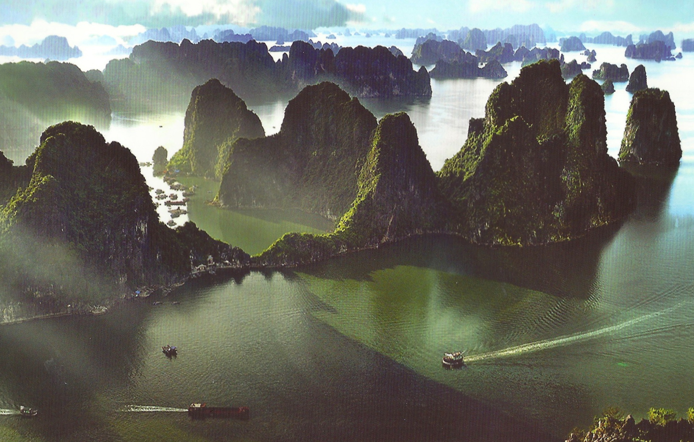
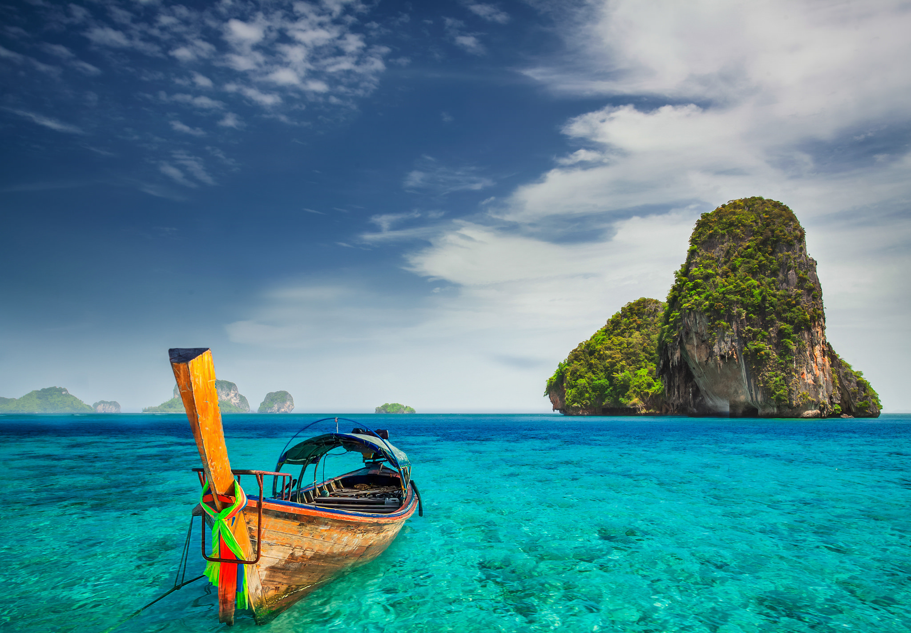
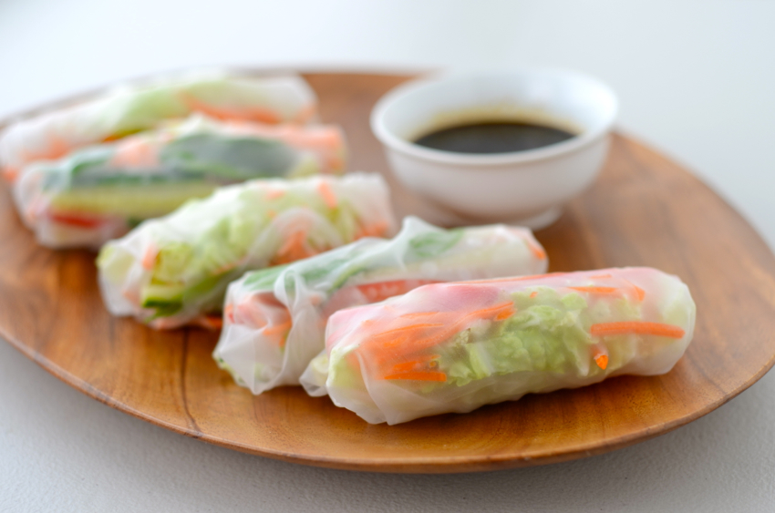
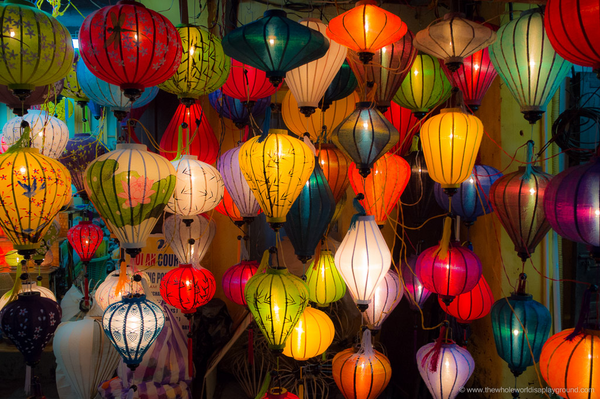

Ha Long Bay
Stunning Halong Bay continues to dominate the itineraries of most travellers in Vietnam, but it is not the be-all and end-all of the country's northeast.
Hạ Long Bay has an area of around 1,553 km2, including 1,960–2,000 islets, most of which are limestone. The core of the bay has an area of 334 km2 with a high density of 775 islets. The limestone in this bay has gone through 500 million years of formation in different conditions and environments. The evolution of the karst in this bay has taken 20 million years under the impact of the tropical wet climate. The geo-diversity of the environment in the area has created biodiversity, including a tropical evergreen biosystem, oceanic and sea shore biosystem. Hạ Long Bay is home to 14 endemic floral species and 60 endemic faunal species.
Towering limestone pillars and tiny islets topped by forest8 rise from the emerald waters of the Gulf of Tonkin. Designated a World Heritage site in 1994, Halong Bay's spectacular scatter of islands, dotted with wind- and wave-eroded grottoes, is a vision of ethereal beauty and, unsurprisingly, northern Vietnam's number one tourism hub.
Sprawling Halong City is the bay's main gateway but its dowdy high-rises are a disappointing doorstep to this site. Most visitors sensibly opt for cruise-tours that include sleeping on board within the bay, while a growing number are deciding to eschew the main bay completely, heading straight for Cat Ba Island from where trips to less-visited but equally alluring Lan Ha Bay are easily set up.
Vietnamese Cuisine
Cuisine in Vietnam is quite varied with many foreign influences having affected its development over the years. In the north of Vietnam, heavy Chinese influence has led to the more heavy use of stir fries and wok based or slow cooked meals, often with noodles and vegetables. In the south where the growing climate is more conducive to a variety of herbs and crops, dishes are typically grilled or eaten raw with more sweet and salty elements added in. The French occupation during the colonial period also is largely rumored to be responsible for the popularity of pho, of one of Vietnam's staple soups.
Across the long skinny country however, a few things do remain consistent. Most every meals includes rice, that all important staple in Vietnam. This may include rice in an alternate form such as noodles, rice paper, rice porridge, rice wine, etc. Rice is served at almost every meal (even desserts) and is used in most every dish. Another staple condiment for the Vietnamese is their ever popular fish sauce (or Nuoc Mam). Made from fermented anchovies laid out over six months in wooden barrels and salt, this fermented and condensed flavoring in a bottle is used in cooking and as a condiment on the table for after the meal is prepared. Many families mix it with garlic, lime, sugar and chilies as well to give it more flavor for the topping. It is as common as table salt is in the west.
Herbs used in cooking vary depending on the region of Vietnam you find yourself. Those in the north tend to be more on the salty side of things, while those in the south might hold more of a savory element to them. Herbs used commonly include cilantro, lemon grass, basil, dill, mint, green onions, scallions, garlic, lime leaf, ginger, tamarind pulp, cinnamon, and fish leaf. Chilies are also often mixed in to a dish to give it added flavor. Dairy products such as milk, creams, and cheese are rarely found or used in Vietnamese cooking. What is found however, is the common use of sweetened condensed milk. This sweet form of dairy is often added to coffee (or more correctly by the quantities coffee is added to the milk) making it an incredibly strong and sweet drink. Beyond this, dairy of any sort is rarely used.
Meats and fish are also commonly used in all Vietnamese cooking. Dishes often contain at least form of meat or fish, if even just a few prawns (bone in sometimes). See below a few more common and popular dishes in Vietnam:
Pho (pronounced fu with a short u sound) Rumored to have been created thanks in large part to the French thirst for meat and steak, the frugal Vietnamese used the scraps and leftover meats in a broth with noodles and sometimes vegetables to not waste the meat. This common soup has become popular world-wide.
Spring Rolls Sometimes fried, sometimes wrapped in fresh rice paper, these rolls are a staple at many meals as well and are often stuffed with vegetables and shrimp and some herbs.
Bun Cha Rice noodle dish with grilled marinated pork
Release A Lantern Into The Night Sky In Vietnam In September
Lanterns, lanterns everywhere! Our week in Vietnam was in full swing and, after an amazing journey from Hue over the Hai Van Pass, we arrived in Hoi An just in time for the Lantern Festival. We were instantly drawn in by the picture perfect lantern and candlelit Song Thu Bon River and we were amazed by the huge crowds and the festival atmosphere. The ancient town is closed to motorised traffic on the night of the festival and we spent the evening wandering around Hoi An and the banks of its river. Here’s a lowdown of the highlights from our magical evening! The Japanese Covered Bridge The Japanese Covered Bridge is synonymous with the ancient UNESCO town. We stood on the crowded wooden platform across from the bridge and admired the flickering lanterns illuminating the river and the bridge above. Romance is most definitely in the air at the Lantern Festival and it was so lovely to see the newly married couples pass by in little sampan boats ready to release their lanterns in the hopes of bringing luck to their marriage. The festival is full of hope and beauty and there’s no place where this is more evident than the Japanese Bridge.
A Lantern Filled Song Thu Bon River The Lantern Festival is all about the lanterns: it’s only fair really! As the evening progresses the river quickly fills with colourful lanterns and sampans ferrying passengers on a scenic cruise through the maze of lanterns. We spent over an hour in a quiet spot along the banks of the river and enjoyed the beautiful scene in front of us. The river is truly magical on the night of the Full Moon Lantern Festival and the lantern covered water took our breath away.
Setting our lanterns free! From the moment we got close to the hub of the evening’s action, the Cau An Hoi Bridge, we were accosted by lantern selling locals. Releasing a lantern on the river is said to bring good fortune and love and we were happy to indulge! The lanterns are identical with coloured cardboard housing a burning candle: the going price is 5,000 VND and we set free a sufficient number of lanterns to bring us good luck well into the next millennium! Did I mention how much I love candles? The sellers provide super long poles to lower the lanterns into the river and releasing our lanterns was the absolute highlight of our evening!
The Riverside Action! The river banks are lined with lantern sellers, pop up street food cafes, souvenir stalls and ancient game playing locals. The food was excellent and cheap, the people watching was fascinating and we bought many, many souvenirs to remind us of our night at the Lantern Festival. We watched the theatre performers, listened to the traditional music and poetry recitals and mingled with the locals and tourists who were in Hoi An that evening. It felt like we had been transported back in time and were in a different world! The delicious street cafes:
An Hoi night market We crossed the hectic Cau An Hoi Bridge to An Hoi to check out the night market. The night market was bright and chaotic and we had a blast wandering through the shops and stalls and indulging in some friendly banter and negotiations with the locals. The lanterns are the main attraction, no doubt helped by the night that was in it, and the bright and colourful displays are wonderful!
Overall We had a fab evening in Hoi An and the Lantern festival was an amazing treat! On any given day Hoi An really comes alive in the evening but the colourful lanterns and the electric festival atmosphere make for a truly beautiful and special night in the ancient town. We couldn’t have asked for a better time to visit Hoi An!